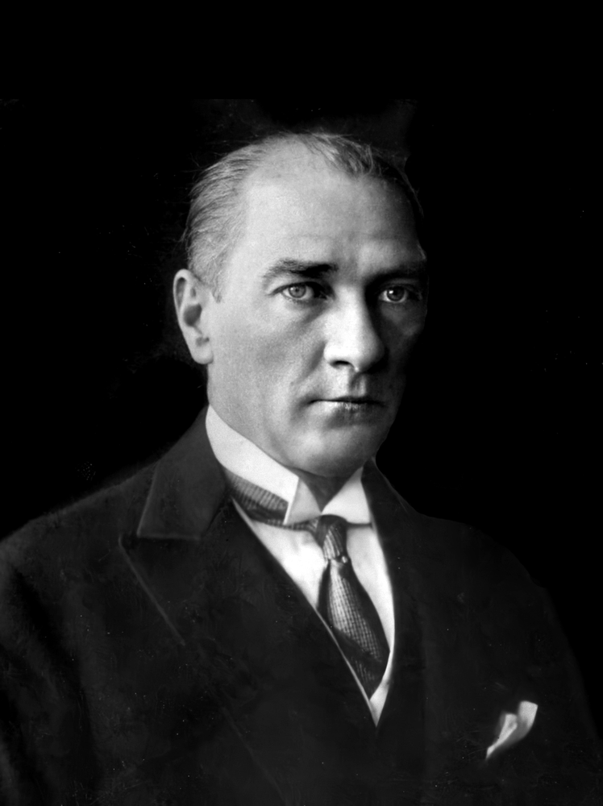

Öğretmenler!
Cumhuriyet sizden
fikri hür, vicdanı hür,
irfanı hür nesiller ister.
Başta Başöğretmen Mustafa Kemal Atatürk ve şehit öğretmenlerimiz olmak üzere tüm öğretmenlerimizin Öğretmenler Günü kutlu olsun.
kaydır
Teşekkürler öğretmenim
Təşəkkürlər, müəllimim
Рақмет, мұғалімім
Рахмат, мугалимим
Rahmat, o‘qituvchim
Sag bol, mugallymym
24 Kasım 1928
Neden 24 Kasım
24 Kasım 1928’de Millet Mektepleri Talimatnamesi Resmî Gazete’de yayımlandı. Mustafa Kemal Atatürk, yeni harflerle okuma yazmayı bütün ülkeye yayacak bu seferberliğin başöğretmenliğini kabul etti.
1981’de, doğumunun yüzüncü yılında, bu gün Öğretmenler Günü ilan edildi.
Öğretmenim dediğimiz anlar
- İlk okumayı öğrendiğim gün
- Bana inandığın gün
- Adımı tahtaya yazdığın gün
- Yanlışımı sabırla düzelttiğin gün
- “Sen yaparsın” dediğin gün
- Elini omzuma koyduğun gün
Zarfın üzerine bas
İçinden bir satır çıksın
Şehit öğretmenlerimiz
- Abdülkerim Usta
- Mahmut Karabekiroğulları
- Süleyman
- Mustafa Fehmi Kubilay
- Mehmet Saygıgüder
- Recep Çakır
- Bekir Dedaş
- Nevzat Demirci
- Ömer Faruk Bingöl
- Fevzi Ateş
- Ali İncekara
- Ergün Erol Gürsesoğlu
- Kadir Kayhan
- Selahattin Karakaş
- Şekip Akın
- İsa Karaaslan
- Asım Özden
- Aydın Acun
- Şenol Akar
- Adem Akdeniz
- Hüseyin Aydemir
- Muhammed Yıldız
- Ali Boşgelmez
- Lokman Çeker
- Musa Sarısaç
- Mustafa Çağlar
- Mitat Eren
- Nuri Öztürk
- Sezgin Yolcu
- Çevik Ersin Temel
- Durmuş Güçlü
- Mehmet Kapusuz
- Fasih Söğüt
- Tahir Civil
- Hanifi Çakallıoğlu
- Ahmet Bekar
- Bayram Yeşil
- İzzet Yüksel
- Sabahaddin Kurtuluş
- Hakkı Koçak
- Ertan Sevim
- Ali Karaoğlan
- Mehmet Gezer
- Esma Karadoğan
- İbrahim Kızmaz
- Ömer Zeki Varan
- Orhan Gök
- Mehmet Geren
- Ramazan Ege
- Şevki Akgün
- İlyas Açar
- Orhan Korkmaz
- Seydo Aydoğan
- Ramazan Ergi
- Abdurrahman Taner
- Engin Eker
- Abdulvahab Yersiz
- Mehmet Şirin Kaya
- ve tüm şehit öğretmenlerimiz…Unutmadık.
Öğretmenler Gününüz
Kutlu Olsun
Gelecek gençlerin,
gençler ise öğretmenlerin eseridir.
